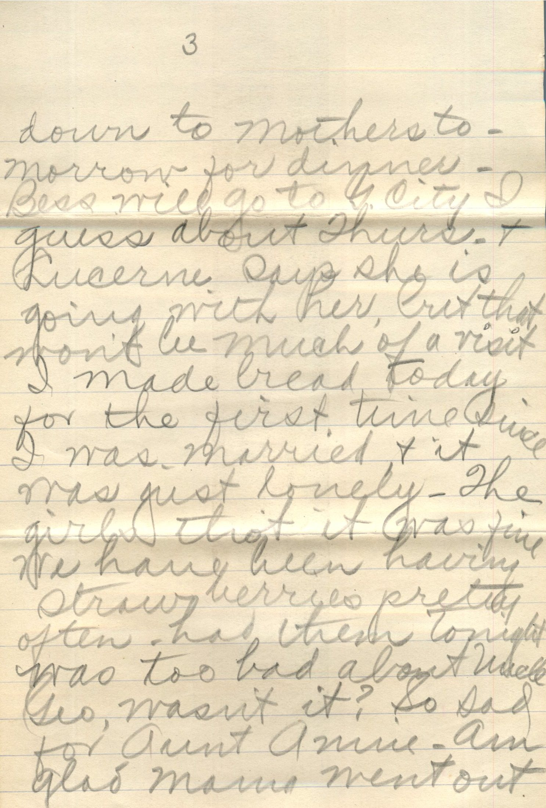
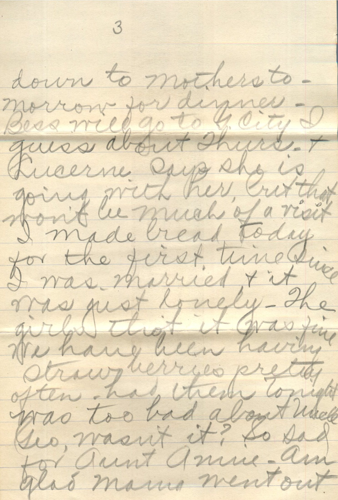

From: Grace Chandler, To: Ruby and All

 

From: Grace Chandler, To: Ruby Chandler and All Mailed From: Morrisonville on June 5
Morrisonville 6/5 Dearest Ruby & all: - Well I'll bet you'll think of all things! To actually get a letter from me - I certainly have been neglectful but I hope you'll forgive and forget the laps of time since I last wrote. Of course you know I have the baby and besides being chief cook and Bottle Washer, it keeps myself pretty busy. The girls arrived OK and we were so glad to see them, and they I think were overjoyed to see us and up to PM the present time 10:30 are still having fits over the baby. She does so many cute things. We can't tell you all, but you will see when we come over. Mr. Smith is calling on Bess tonight. We have all just been up town in the car and had ice cream sodas. We also met the girls in the car. I'm so afraid it's going to rain tonight so we can't go in the car. We are all evicted down to mothers tomorrow for dinner. Bess will go to the city I guess about Thursday and Lucerne says she is going with her, but that wont be much of a visit. I made bread today for the first time since I was married and it was just lovely. The girls thot it was fine. We have been having strawberries pretty often. Had them tonight. Was too bad about Uncle Geo, wasn't it? So sad for Aunt Annie. Am glad Mama went out there. I'll bet it will be rather lonesome for you Ruby without the girls away. But Bess will woo be home. Gee! I sure do hate to see her leave. Don't suppose she will be home long either as she is going to big college this summer. Ruby you know how it is for me to write now. Wasn't to talk to the girls. So will tell you goodnight tonight. Hope Papa is well and the rest. Will write soon again- Love to all, Grace